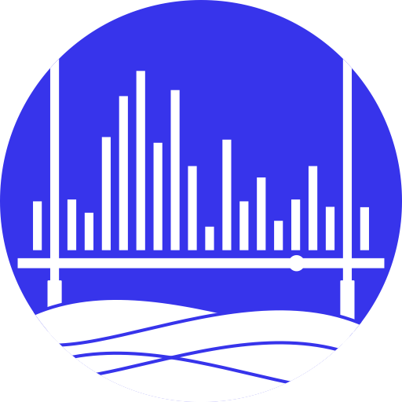
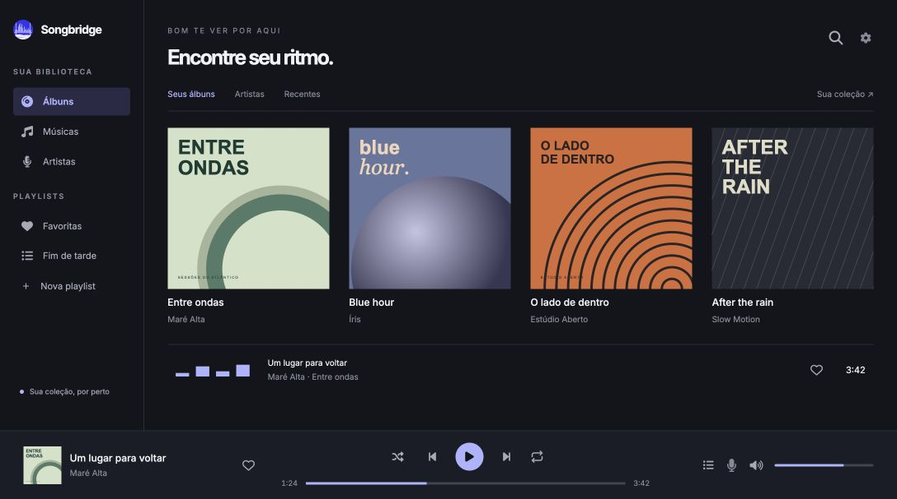

▦
Uma biblioteca com a sua cara.
Adicione suas pastas e explore suas músicas por artista, álbum ou faixa. Capas e metadados ajudam a encontrar o que você procura.

songbridgeDESKTOP Baixar o app ↓
Uma ponte entre você e o seu acervo.
Redescubra seus álbuns, organize suas playlists
e dê play no que é seu.

Do álbum que marcou uma época à playlist que ainda está tomando forma. Uma casa para a sua coleção.
Adicione suas pastas e explore suas músicas por artista, álbum ou faixa. Capas e metadados ajudam a encontrar o que você procura.
Junte suas descobertas e seus clássicos. Crie playlists e organize a fila para deixar a próxima música sempre por perto.
Busque no seu acervo e volte aos seus favoritos. Suas preferências, playlists e biblioteca ficam salvas no aplicativo.
O Songbridge nasceu de uma ideia simples: sua coleção merece um espaço próprio. Um aplicativo de desktop dedicado às músicas que você guarda e às histórias que elas carregam.
Construído com Tauri, React e Rust. Desenvolvido de forma aberta, com espaço para novas ideias — inclusive as suas.
Faça parte do projeto ↗Escolha seu sistema e leve o Songbridge com você.
Para Apple Silicon e Intel.
Apple Silicon ↓Baixar para Intel ↗Instalador para Windows x64.
Baixar para Windows ↓Prefere o instalador MSI? ↗Escolha sua distribuição e arquitetura.
Versão mais recente: 0.6.0 · Notas da versão ↗
Troque ideias, reporte problemas ou ajude a criar o próximo capítulo.